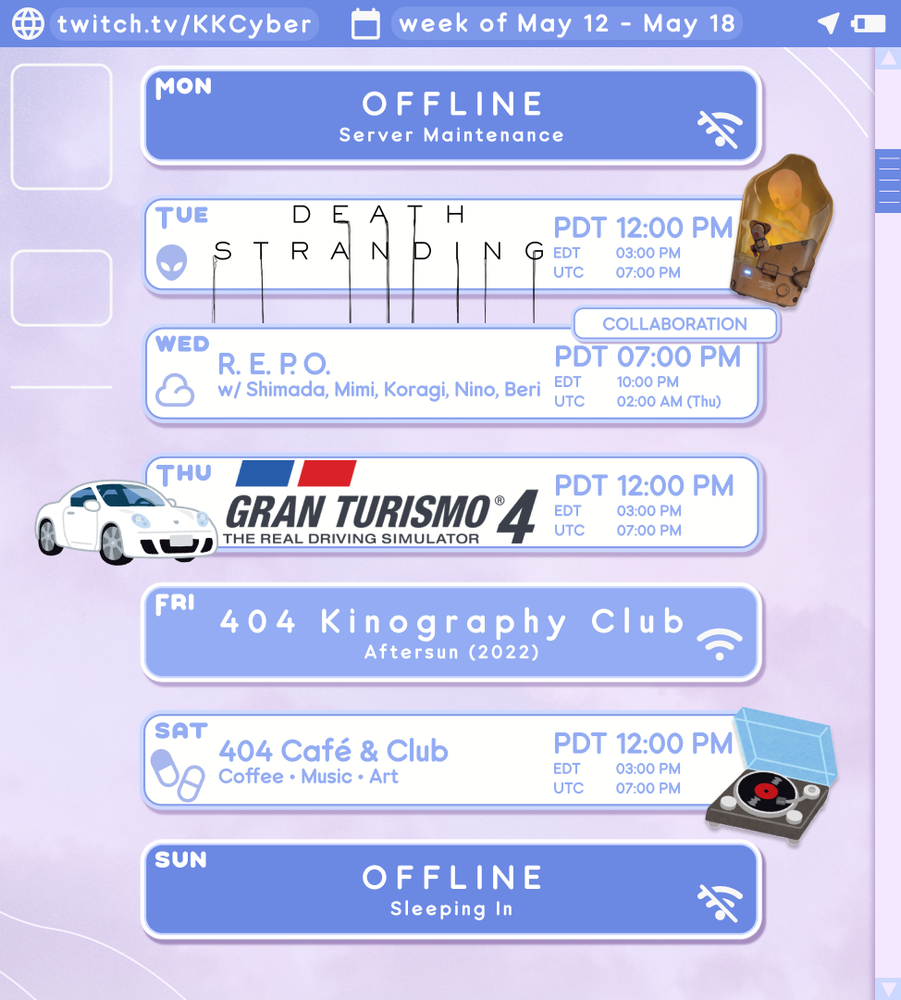

// DATE //
〚TITLE〛
---


 Welcome!
Welcome!
Thank you for logging on! いらっしゃいませ! Enjoy your stay here at 404 Café & Club! Grab a drink, sit back, and relax
404 Café & Club is a small shop for weary netizens to recharge and relax before wandering further
into the virtual world, or logging back into reality. Many of our guests find comfort and company from
KKCYBER, owner, operator, and webmaster! Spend as much time here as you'd like, or make it a pit stop~!

"No matter where you're from or where you're going, we'll always be connected~! ☆" - ♥ KKCYBER


〚TITLE〛
---
〚MASH VP! RE:VISION〛
"Fusion, Synthesis, Coalescence" That's the tag line for this newly released music game from start-up Japanese company AXTORM! A friend of mine has been working hard on developing this game with many other talented music gamers and in-house artists! They reached out to me and asked if I'd be interested in doing a sponsored stream to show off the game and especially share it's fun to the English speaking world! It's a bit gimmicking, since the game has two lanes which converge into one, but the current song list and featured artists are some of the best I've seen in a PC music game! Check out MASH VP! RE:VISION on steam today!
〚404 CAFÉ〛
Monday again? NO PROBLEM! 404 Café doors are open and coffee is being brewed! Today's Robusta pour-over was served with you choices of a blueberry muffin, ham and cheese bun, or garlic cheese bun from a local bakery here in the City of Angels! While sipping our coffee, I shared all of the fanart I've received over the past few months! I'm so happy to have inspipred so many artists and seeders to either create art of me or commission art on my behalf! THANK YOU! We had some chats after, about philosophy and my own attempts at digging deeper into my own ego now that I feel more confident than I have in many many years. I shared some of my favorite quotes from Marcus Aurelius' Meditations, which is a compilations of the Roman Emperor's notes of himself and ideas, published posthumously. It's been a really enjoyable read, so I recommend it! After cleaning off the counter a bit, I was in the mood to play some games with you casually! First, I showed off my latest guilty pleasure, an indie game called Nubby's Number Factory. It's giving early 2000s CD-ROM with 1001 untitled games, and is honestly pretty goofy looking, but it's been fun to just play a bit of when winding down! Some seeders were worried about my work life balance, especially after one particularly grueling shift at the numbers factory... so we switched over to Monster Hunter Wilds! It's the first time I've had a chance to really play with you, so I opened a lobby and pushed further into High Rank! My PC crashed at one point, but after rebooting we played a bit more... until my PC crash agained. That's the curse of streaming unoptimized AAA games I suppose! Either way, hunting together was a blast, I even started learning Swtich Axe at the end!
〚FFXI ONLINE〛
Time for more adventures in Vana'diel! Since we last streamed, I spent some time leveling my Ninja, unlocking various ninjutsu, and making sure I had all of the ninja tools I needed to cast them! Today's goal was to reach Rank 4 in Bastok, our home city! After meeting up together, we adventured to Beaudeaux, to clear a mission in which we needed to kill 20 Copper Quadavs. They're a kind of turtle-like race of beastmen. Since one of our party members was severely underleveled, we took a bit longer to achieve our task. While there, I made a few very chuuni macros for my ninja. One of the best moves as a ninja is to create shadow clones, and I added some flavor text along the lines of my shadows covering up my loneliness... only to be overshadowed by Shimada's Samurai haikus. *SIGH* Our next quest was to scale up Delkfutt's Tower, our first dungeon! Lily very stubbornly wanted to farm for XP while there, while the rest of us insisted we scale to where we need to be to beat the boss monster as soon as possible! After much pleading and countless pit-stops, we beat the boss, acuqired keys, and saved a member of the Bastok Consolate! Rank 4 GET~! The last few hours of stream were spent unlocking access to the past, which was needed especially to unlock the dancer class. I was surprised to see how much more colorful Vana'diel was 20 years prior the current era! While chatting, Maple told us about Skillchains, something that she said she never really understood since she's always played magic-users. Since Shimada and I are playing as a Ninja and Samurai, we decided to try to practice synergizing a bit, and when we finally achieved a successful Skillchain... both of us died shortly after. After getting re-raised again, we had some more successful attempts at Skillchains! Thus, the stream came to and end and our adventures were paused until next time!
〚SPRINGTIME VR〛
Spring is officially here, can you believe it?! I had been feeling a bit out of sorts the last few days, but my love for the warmer seasons fired me up to bloom into my own new lease on life this spring! I woked hard behind the scenes this week on putting together a new springtime look for my 3DVR model. What did you think of my sheer flowly white dress with ruffled straps, strong heavy combat boots, and my hair tied in a side ponytail, seeder? I felt so comfy and cute in my new dress, especially since I got to show it off to you while we adventured around~! We rode in a hot air balloon, admired the cherry blossoms blooming, ate some food outdoor at a cozy spring time café, and even shared an umbrella together in the rain before going our separate ways at the train station! I had so much fun with you today... I'll keep today's date as a special memory for as long as possible!
〚404 CAFÉ〛
Café doors opened again today, though a bit later than usual since I was up really late hunting monsters the night before! Today's roast was more of my house Robusta, this time with a slightly different ratio of coffee to water! I usually brew pour-over using a 1:16 ratio. Since the Robusta beans are a bit older now and not as fresh, I wanted to make sure the results didn't taste too weak, so I opted to brew today's pot of coffee with a 1:14 ratio! It tasted great~! Bold, but still very smooth and easy to drink~! I was a bit low on energy and still had work to do offline, but I still wanted to create something together! Therefore, I folded a few pieces of origami paper from a set that was sent to me by a seeder~ We folded two cats, a bird cage, and a ribbon themed after Kiki's Delivery Service~ I got pretty hungry at one point, so after a break I served up some cheese tortellini with homemade tomato sauce, and a pork sauage あらばき bun from a local bakery with some bold iced green tea! Thanks for having a relaxing time with me today~ let's drink more coffee together soon!
〚MONHUN: WILDS〛
Tonight was a collab with Shimada and Clio! Usually we'd be joined by Yozora, but since she was busy we did our best as a party of three~ None of us had made it to high rank yet, so after chatting and doing some warm up hunts, we successfully hunted the last few monsters in the main story! Afterwards, we did some high rank missions together, including hunting our first ever Rathian. I'm still trying to figure out many of the mechanics of the game outside of wielding my weapond, and even then I've got plenty of room for improvement. However, I was still able to show off a bit with my own PoV today, making the use of my bread and butter combo as an Insect Glaive hunter. I even dodged a fire attack by vaulting in the air! Pretty cool, huh seeder?
〚ASMR〛
Tonight's ASMR wasn't particularly innovative, but at the same time was a strong stream for sure! The cats were especially rowdy, but I did my best to ensure you could relax and rest really well. I used some of my favorite soft brushes, a cozy blanket, and leaned in and whispered in your ear as close as possible. Did you rest well, seeder?
〚FFXI ONLINE〛
That's it, you're going back to 2006 seeder! I am officially "back on my bullshit" and am playing an MMO again, but this time with fellow friends who also stream~ Today I played Final Fantasy 11 with Maple, Shimada, and Lily on stream! We've played a bit together offline, but today was our first time streaming our adventures in Vana'diel. Today we spent a while farming for Keys needed for an airship pass to Kazham. It took way longer than we expected, but we had so much fun even if only a shred of sanity was dwindling by the end. After defeating our first boss together, farming keys, and finally getting to Kazham, we made our way to Norg where I delivered an item necessary for unlocking the Ninja class (NIN). Once we split up outside of Norg, I decided to try out playing as a ninja! Before anything else, I wanted to figure out what my level 1 job ability does. I was clueless... a fool even, for not knowing sooner that the ability causes my character to self-destruct. It made for a wonderfully hilarious clip at least~! After 8 straight hours of gaming, we called it a day until we meet again next week!
〚KILLER7〛
Happy White Day, seeder~! You got me something in exchange for the chocolates I gave you on Valentine's Day... right? Before we got to the main portion of today's stream, I played Seeder's White Day 2, a fan game made by fuzzysite. It made me smile and laugh a lot, which really helped me keep my mood and energy up today. Afterwards, we moved to Killer7, Encounter 05 Smile, the longest chapter in the game. The game really climaxed at this point, revealing the truth behind one of the members of the Smith Syndicate, and what really happened to bring their downfall. After the credit rolled, we played through the final chapter, a very short one titled Encounter 06: Lion. I had to make a choice at the end... honestly, I don't know if the choice I made was the right one, but it felt right at the time. I hope you don't think of me as a monster, seeder. I had to stick with my gut! By clearing the game, we unlocked Killer8, the Hard Mode version of the game. Thanks for enjoying this surreal story from Suda51 with me! Let's explore more surrealism together~!
〚ASMR〛
Tonight's ASMR was a bit more abstract than my usual ASMR Roleplays, and my mood was a bit gloomy, but I was my authentic self and did my best to free myself of judgement towards my negative emotions, and chose to lean into them further when talking about life, art, and my own persuit of happiness. I was really vulnerable, but its a feeling I experience most often when I paint.
〚KILLER7〛
HAJIME~! Today, we completed Target 04 Alter Ego, in Suda51's Killer7. This chapter of the game was especially enjoyable because it had a lot of original animations, in an old school tokusatsu style. We were tasked with assassinating Trevor Pearlharbor, the creator of Handsomemen, a comic pubished by ZTT comics. Rumor has it, the Handsomemen were operatives developed by the US military to fight against the Heaven Smile outbreak. After watching Handsome Black kill Trevor with a stray shot, Dan was challenged by Handsome Red in a 7 vs 7 match up against the rest of their members. The final fight was a close one, but the Killer7 reigned supreme! I was informed that next chapter in the game is a bit longer, so you'll have to tune in next time for more!
〚404 CAFÉ〛
After a few weeks of renovations, 404 Café reopened its doors! Today we made a fresh pot of pour-over coffee using Robusta beans with a new specialty topping, vanilla cold cream! It surely detracts from the sanctity of the beans, but it's nice to have a sweet treat from time to time! While sipping coffee, we caught up a bit since it's been quite a while since we've been able to go at a relaxed pace and just enjoy each other's company. We talked a bit about my new advancements in Japanese language learning, as well as my own mental growth from the SiteJam! The mental excercise of not knowing much about a skill, but having the drive to practice and ability to learn over time is something that I will hold close for years to come, and remind myself about when I am frustrated with my own abilities. After coffee, we looked at everyone's SiteJam participation! Some seeders made shrine pages, others personal websites, some made some cute tools, and even worked on seeder hardware! The 404 SiteJam was such a fulfilling event, and I can't wait to host something like this again in the future!
〚KILLER7〛
"Hurts, doesn't it?" Today I made more progress in Killer7, one of Suda51's earliest works. We completed Target 03 Encounter, and successfully assassinated Curtis Blackburn. He was a particularly scummy old man with a disgusting "hobby". I decided it was best to space the targets between streams, especially because this chapter was split into 2 parts. The first part took us to an amusement park! We had so much fun at the Freaky Fun House and Killer Mansion! I don't want to talk about what we witnessed at the Blackburn Estate... but we at least had a lot of fun sliding down the garbage chute, relaxing by the pool, and admiring the Fairlady Zs in the garage!
〚ASMR〛
Come in closer seeder... no... closer! EVEN CLOSER! Tonight's ASMR focus on super cozy up-close whispers! There was a surprising amount of extra street traffic noise today, but the cats were well behaved and I did my best! I hope you got some good rest~!